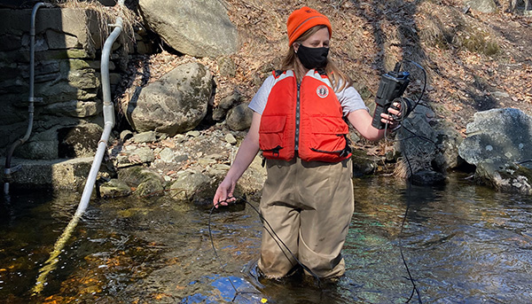

Why should we care about water quality and water quality monitoring initiatives?
The question was then recreated as a problem statement, and a web based solution was developed in response to it. The GEOM 99 learning goals require WebFoxTrot to explore web technology in GIS by applying it to address the above stated problem. This assignment mirrors how such a solution would be implemented based on a real need in a municipal or consulting role.
Water quality monitoring programs are a vital tool to help improve local waters. It is the process of testing and assessing water to make ensure there is compliance with drinking water standards and helps alert us to on-going problems that could effect the health of our communities.
It goes far beyond simply protecting our drinking water. In Canada, we are lucky to hold 20% of all the world’s freshwater in the Great Lakes. It and the St. Lawrence River Ecosystem break down our wastes, reduce the risks of flood damage, provide food resources, and help moderate extreme weather.
Since all aquatic ecosystems depend on the quality of our water, and many different factors can impact the health of our waterways, the obvious conclusion is that we need water monitoring and water monitoring education in order to protect our most valuable resource.